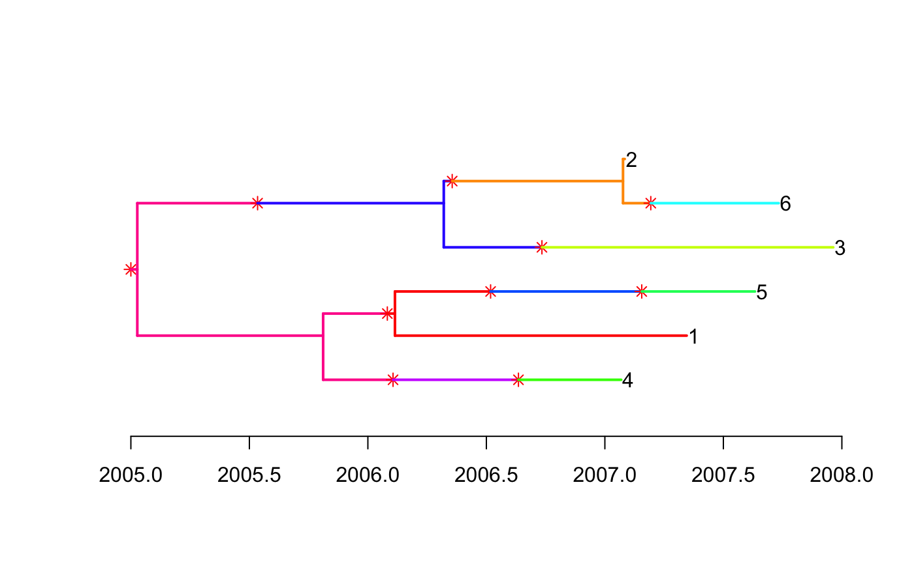
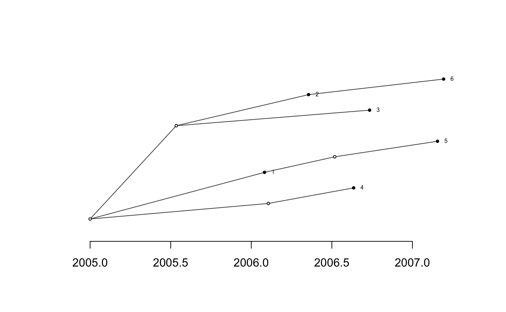
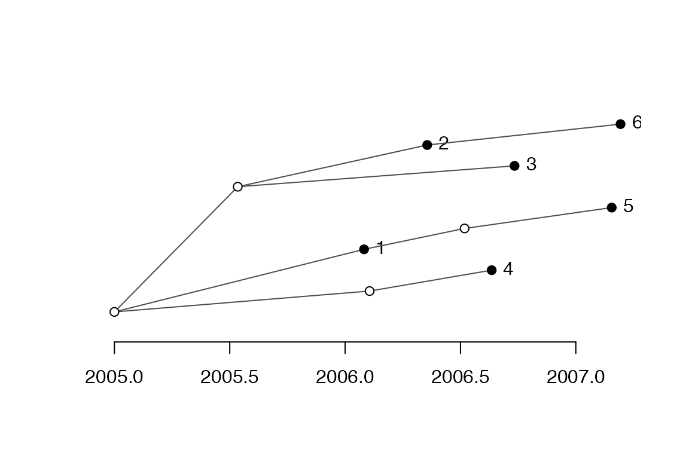
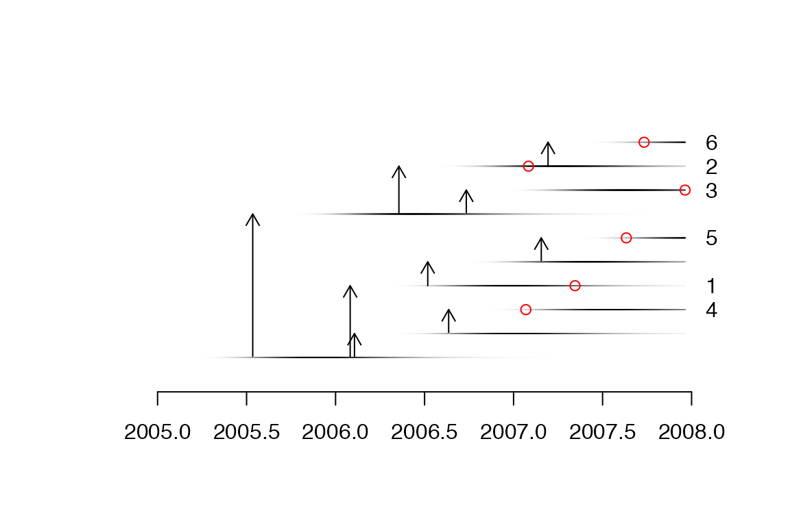

If you want to reproduce exactly the same results as the ones shown in this tutorial, you need to set the seed of your random number generator to zero:
A pathogen has an effective within-host population size of \(N_e=100\) and a generation time \(g=1\) day, so that \(N_e g=100/365\) year. The offspring distribution is negative binomial with mean equal to the basic reproduction number \(R=5\). Both the generation time and the sampling time are Gamma distributed with parameters (10,0.1) which has a mean of 1 year. The density of sampling is \(\pi=0.25\). The following commands specify these parameters:
We simulate an outbreak that starts in 2005 and which and is observed up to 2008:
simu <- simulateOutbreak(neg=neg,pi=pi,off.r=off.r,w.shape=w.shape,
w.scale=w.scale,dateStartOutbreak=2005,dateT=2008)This simulation contains both the transmission tree between infected hosts and the within-host phylogenetic tree of each host. This can be visualised as a colored phlogenetic tree, where each host is represented by a unique color:

The transmission tree can be extracted and plotted separately from the phylogeny:

A more detailed plot can be displayed as follows:

The phylogenetic tree can be extracted and plotted separately from the transmission tree:

The extracted phylogenetic tree can also be converted into a phylo object from the ape package:

You can save this tree into a Newick file for further analysis. This is the tree that is used as the starting poit of the tutorial on inference of a transmission tree from a dated phylogeny.
The content of this Newick file is:
## [1] "(((2:0.007344035611,6:0.656820028):0.7562780805,3:1.643413444):1.293120815,((5:1.519248672,1:1.231048819):0.303038892,4:1.257652937):0.784065883);"This phylogeny is scaled in years, but time is measured only relatively to the date of the last sample which is at 0 on the x-axis of the figure above. To use this tree again we also need to know exactly when was the last sample taken:
## [1] 2007.964